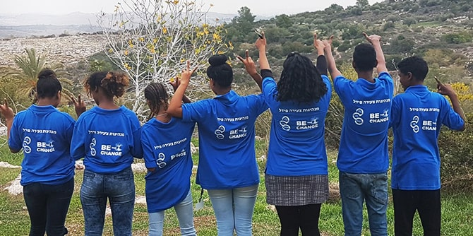
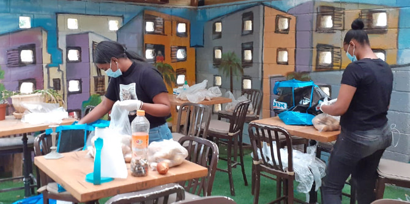
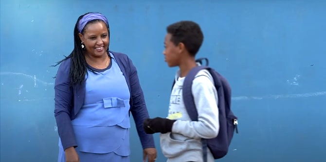
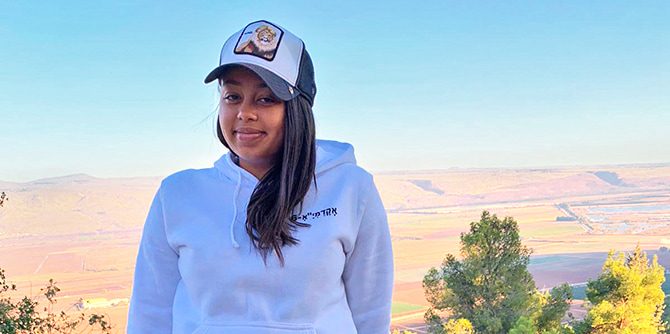

עמותת פידל הוקמה על-ידי ד"ר נגיסט מנגשה כדי לקדם את השילוב החינוכי והחברתי של יוצאי אתיופיה. כיום ד"ר מנגשה מכהנת בוועד המנהל של עמותת פידל והיא מנהלת המחלקה לחינוך, נוער וספורט בעיריית ראש העין. את העמותה הקימה לא רק כדי להתמודד עם אתגריהם של יוצאי אתיופיה, אלא גם עם אלה של החברה בכלל, מתוך התפיסה שנושאים חברתיים משותפים לאוכלוסיות רבות ושונות.
זה 14 שנים עמותת פידל ("אלף-בית" באמהרית) מפעילה מרכזי נוער לאתיופים-ישראלים בשכונות ברחבי ישראל. מרכזים אלו מעניקים לבני נוער בית חם ותומך להעשרה תרבותית וחברתית, תוך שהם מעודדים אותם לקחת חלק בפעילות חברתית. עם הסגר הפתאומי שהוטל בשל נגיף קורונה, מרכזי הנוער נאלצו לסגור את שעריהם. הצעירים מצאו עצמם ללא הפעילות הרגילה, ללא אינטראקציות עם בני נוער אחרים וללא מבוגרים אכפתיים. בו בזמן הושבתו בתי הספר, דבר שהפך חלק מבני הנוער למועדים יותר לנשירה מכל המסגרות.
המשבר דרדר חלק גדול מבני הקהילה האתיופית בישראל למצב נואש, מכיוון שרבים מהם כבר חיים מתחת לקו העוני, וכעת הם מאבדים את מקום עבודתם באופן זמני או קבוע. לרבים בקהילה יש משפחות ברוכות ילדים והם גרים בדירות קטנות וצפופות, שיכולות להוות כר גידול לאלימות במשפחה. הישרדות יומיומית הפכה לדאגה מרכזית.

ראשית גיבשו אנשי ההנהלה של פידל תוכנית חירום כדי להבטיח שהארגון יהיה מוכן לספק מענה לצרכים הדחופים ביותר של הקהילה. במסגרת התוכנית יזמה ד"ר מנגשה, בוגרת בית ספר מנדל למנהיגות חינוכית, פרויקט מעורר השראה לגיוס בני נוער – בעיקר מאשקלון, לוד, רמלה ועפולה – ליצירת "כוח חירום" שיסייע לקהילה באופן פעיל. מטרת התוכנית הייתה להבטיח שבני הנוער יקיימו פעילות משמעותית, ויהיו בקשר קבוע עם צוות המרכז. הדבר סייע להעצים את תחושת הערך האישי שלהם, בכך שירגישו נחוצים ומחוברים. קרן מנדל העניקה סיוע ליוזמת חירום זו כדי לעזור לקהילה האתיופית להחזיק מעמד בתקופה קשה זו.
בפיקוח צוות העובדים של פידל הוטל על בני הנוער למפות את הצרכים של חברי הקהילה המקומית במהלך הסגר. כל מתנדב צעיר אימץ שני קשישים מבני הקהילה ויצר עמם קשר מדי יום כדי לאמוד את צרכיהם המידיים ולדאוג לאספקת מזון, תרופות וציוד חיוני אחר. בני הנוער אף רכשו מזון עבור אימהות יחידניות שלא יכלו להשאיר את ילדיהן ללא השגחה בזמן הסגר. נוסף על כך, בני הנוער שיתפו פעולה עם ארגון "לב אחד", וקצרו מזון משדות של חקלאי מקומי, שתרם את היבול כדי לחלקו לנזקקים.

מטרה נוספת של יוזמה זו הייתה לסייע בהעלאת הביטחון של צעירים אלו ביכולותיהם-שלהם, תוך שיפור האופן שבו הם נתפסים על-ידי אחרים בקהילה.
היוזמה כללה גם רכישת מחשבים עבור משפחות שאין בבעלותן מחשבים, כדי שהילדים יוכלו להמשיך בלמידה מרחוק. במסגרת היוזמה ניתנו שיעורים מקוונים של חונכים ומדריכי נוער לילדים הסובלים מפערים בשפה, בחינוך או בטכנולוגיה.
כדי לספק לקהילה מידע חיוני באמהרית על ההתמודדות עם הנגיף, הפעילה עמותת פידל גם קו חם, וחברי הצוות עברו הכשרה מיוחדת בער"ן – עמותה המעניקה עזרה ראשונה רגשית בטלפון ובאינטרנט, כך שהם היו מוכנים לכל התרחישים.

דוגמה אחת להשפעה העצומה שיש למרכזי הנוער של פידל על נוער אתיופי היא סיפורה של נטלי:
נטלי היא תלמידה בת 17 מבית הספר התיכון אורט לילינטל ברמלה. היא השתתפה בתוכנית פורים במרכז הנוער של פידל רמלה: "קצת חששתי לבוא למרכז, כי זה לא באזור טוב בעיר, אבל החברים שלי שכנעו אותי שזה יהיה שווה את זה". נטלי נהנתה כל כך עד שהחליטה לחזור, ועד מהרה יצרה קשר חזק עם מנהלת המרכז, ניצן טפטה, ועם חבריה בני הנוער.
נטלי מודעת היטב לסכנות שאליהן נחשפים חבריה בני הנוער באופן קבוע ברחובות רמלה, והחלה להתעניין בתוכנית השיטור הקהילתי. היא יצרה קשר עם אמיר אדמסו, אתיופי-ישראלי הפעיל ביחידת השיטור הקהילתי, שלימד אותה להתערב ביעילות עם נוער בסיכון. באופן לא מפתיע, במהלך המשבר היא הייתה הראשונה שהתנדבה לצוות הנוער שסיפק מזון ומצרכים חיוניים למשפחות נזקקות בשכונת ויצמן ברמלה. נטלי מתכננת לשרת בצה"ל במשמר הגבול עם סיום בית הספר התיכון, ולאחר מכן ללמוד באוניברסיטה לימודי קרימינולוגיה.

עם ההקלות האחרונות בתקנות הריחוק החברתית חידשו מרכזי הנוער של פידל את פעילותם הרגילה בהתאם להנחיות החדשות. ציוד מגן אישי נרכש והופץ לכל שבעת מרכזי הנוער בישראל. בתחילת יוני התקיים יום פיתוח מקצועי לצוות ולחברי ההנהלה של מרכז הנוער, ובמהלכו סקרו המשתתפים את תוכנית החירום של נגיף קורונה, שיתפו בחוויות למידה ודנו באתגרים הצפויים לאחר התקופה הארוכה של ריחוק חברתי. בתוכנית הקיץ המתוכננת יישמרו המלצות הבריאות השוטפות. בינתיים, עמותת פידל תמשיך להציע העשרה והכוונה ליותר מ-600 נערים בני 18-13 בערים באר שבע, אשקלון, שדרות, פתח תקווה, רמלה, לוד ועפולה.
{kind=link}
{kind=link}
{kind=link}
{kind=link}